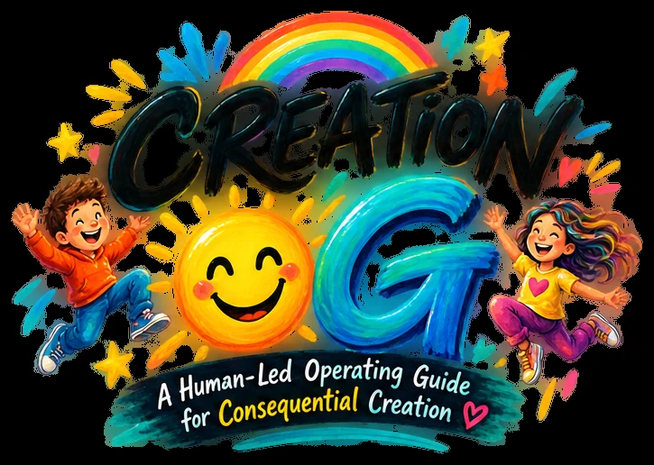

WHO DECIDES?
Find the actual Human authority.

WELCOME, CREATOR!
Maybe it's an idea. A decision. A project. A problem. A possibility you can't stop thinking about.
Good. You brought it to the right room.
COME ON IN! →Come as you are. Wander if you want. Leave anytime.
TODAY'S FIELD TRIP
Pick a door. Start wherever you are. You can always choose another.
THE ADVENTURE
Find the actual Human authority.
Name the possibility and why it matters.
Zoom out to people, places, relationships, systems and future.
Freedom, consent, competence and jurisdiction.
Real enough to learn. Small enough to correct.
Listen for evidence, surprise, burden, benefit and dissent.
Leave room for return, release, repair and another beginning.
TRY. ADJUST. LEARN. TRY AGAIN.
Small truthful experiments keep learning possible without pretending certainty.
THE CLUBHOUSE
Hospitality comes first. The environment should make curiosity, clear perception, meaningful choice and responsible creation easier—not make the Human work to understand the system.
The complexity can live underneath. Up here, you should be able to breathe, orient, explore, rest, choose and return.
THINGS WORTH REMEMBERING
ANOTHER DOOR
Some adventures begin with a question hiding in plain sight.
What becomes perceptible when we experience the world through different mathematical lenses?
Experiment 001A remains a procedural QA instrument. Nothing collected there is eligible Human evidence.
ENTER THE EXPERIMENTAL CLASSROOM →EXPLORE WITH CARE.
BEFORE YOU GO
Freedom to create. Compassion for what creation touches. Responsibility for what creation becomes. Freedom to learn and create again.